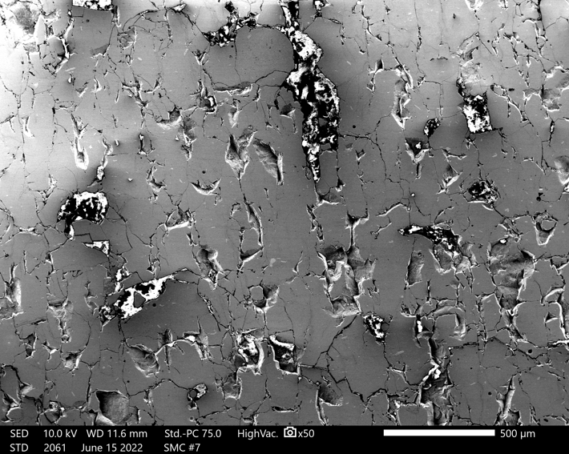

Additive Manufacturing of functional materials
- Tech Stack: MATLAB, Tecplot
- Github URL: Project Link
1. Selective Laser Melting of soft magnetic materials:
- The global soft magnetic material market size was valued at $19.23 billion in 2019 and is expected to grow at a compound annual growth rate of 3.9% from 2020 to 2027. In the U.S., the demand for ferromagnetic material has also risen significantly as the increasing investments in electric vehicles, power transmission sector, and medical equipment. Hence, this research is aimed to establish an advanced manufacturing scheme to produce high-performance, low-cost nanocrystalline-enhanced amorphous soft magnetic materials for electrical motors using Selective Laser Melting (SLM) based Additive Manufacturing.
- Developed a MATLAB code to study the melt pool dynamics along with the effects of process parameters in the SLM manufacturing process using a Finite Volume based Computational Fluid Dynamics technique. Effects of shrinkage, surface tension induced convection, and drag force were taken into consideration.
- Simulated and studied the effects of alteration of process parameters like scanning speed and laser power on the melt pool flow dynamics and cooling rate.
- Conducted powder flowability test using different powder morphologies for manufacturing.
- Manufactured the soft magnetic material using the optimized priniting parameters obtained from the siumlation.
- Polished and characterized the manufactured material using SEM, XRD and EBSD to study the microstructure and crystallographic orientation.
2. Selective Laser Melting of thermoelectric materials:
- Thermoelectric generators directly convert thermal energy to electricity when exposed to the proper temperature difference. The efficiency of the thermoelectric module has not been fully explored due to the drawbacks in conventional design and fabrication methods. Selective laser melting (SLM) additive manufacturing offers a unique potential scalable approach for the fabrication of flexible and functionally graded thermoelectric materials with high energy conversion efficiency.
- In this project, a physical model was developed to simulate the SLM manufacturing process of thermoelectric materials (Mg2Si powders) with additive material (Si) mixed for better thermoelectric performance.
- A comprehensive thermal and fluid study of the SLM melt pool was conducted to understand the phenomena associated with melting. This physical model was established based on the conservation equations and provided a basis to study the fluid flow driven by the buoyancy force and surface tension in the melting pool.
- Currently working on a phase field based modeling to simulate the dendritic crystal growth during the solidification of the meltpool using the spatial and temporal variation of temperature extracted from the CFD based simulation results.
